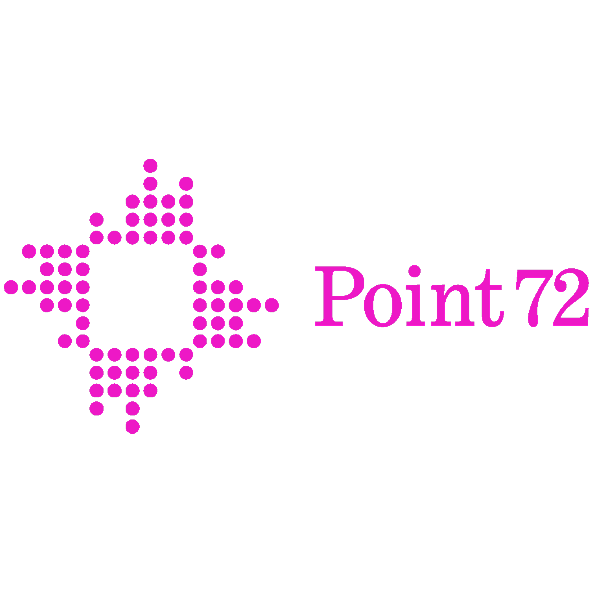
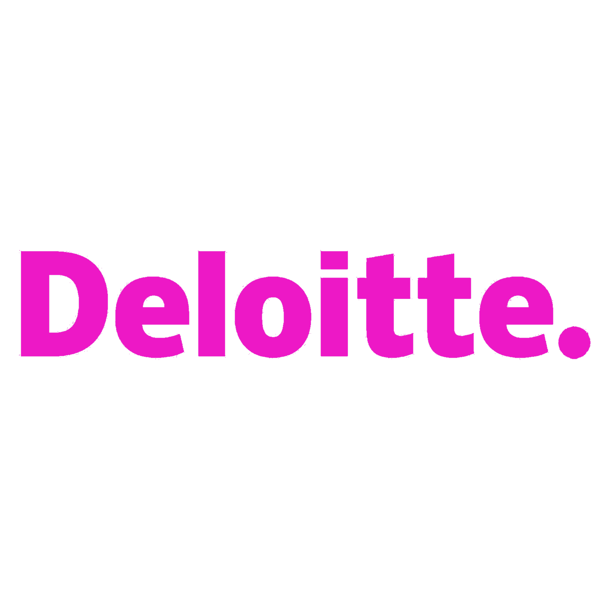
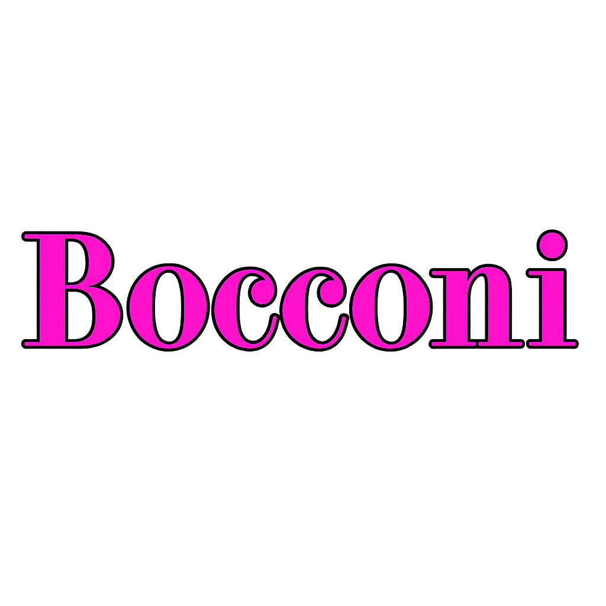

Work Experience
age 22 onwards
Point72 Quantitative Researcher (Intern)
age 20
Amazon Business Intelligence Engineer (Intern)

age 20
Deloitte Cyber Security Analyst (Intern)
age 21-22
University of Oxford MSc in Statistical Science
age 18-21
Bocconi University BSc in Computer Science & Economics
age 21
Georgia Tech Exchange Semester
age 20-21
Bocconi Students for Machine Learning President & Co-Founder
-
Hobbies Gym, music, websites, riddles, print-on-demand, books
-